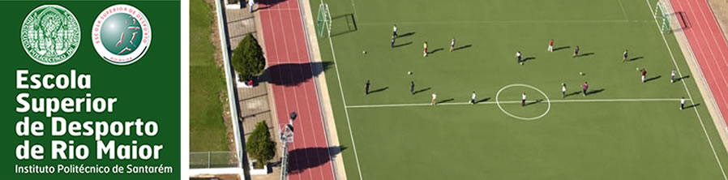

| Organização > Parceiros |

Parceiros
| Nome | Site |
| Academia dos Empreendedores | www.anje.pt/academia |
| Academia Matrix | academiamatrix.com |
| Acrotramp Clube as Caldas | www.tramp.com.pt |
| AEHESIS - Aligning a European Higher Education Structure in Sport | www.aehesis.de |
| Anadia Futebol Clube | |
| António e Sá - Actividades Recreativas e Desportivas, Lda. | |
| Arquivandus,Lda | www.arquivandus.pt |
| Associação Académica da Amadora | www.academicadaamadora.pt |
| Associação de Actividades Gímnicas do Distrito de Évora | |
| Associação de Futebol de Santarém | www.afsantarem.pt |
| Associação de Solidariedade Académico de Leiria | www.academicodeleiria.pt |
| Associação Desportiva Cultural e Recreativa Bairro dos Anjos | |
| Associação Desportiva de Oeiras | www.adoeiras.pt |
| Associação Desportiva de Taboeira | www.adtaboeira.com |
| Associação Desportiva do Carregado | www.adcarregado.net |
| Associação Desportiva e Recreativa de Águas Belas | |
| Associação Desportiva Fazendense | |
| Associação Desportos de Aventura Desnível | www.adesnivel.pt |
| Associação Fernão Mendes PintoIINSERSPORT - Desportos d'Aventura | www.fmps.pt |
| Associação Humanitária Bombeiros Caldas da Rainha | |
| Associação Nacional de Jovens Empresários do Porto | |
| Associação Naval 1º de Maio | www.naval1demaio.com |
| Associação Portuguesa de Corridas de Aventura | www.portugalecoaventura.pt |
| Associação Portuguesa de Profissionais de Piscinas, Instalações Desportivas e Lazer | www.apppages.com |
| Associação Recreativa Cultural e Desportiva de Albergaria | |
| Associação Social da Freguesia de Odeleite | |
| ATL – Companhia dos Saberes | www.cylex.pt |
| Atlético Clube do Cacém | www.accacem.com |
| Autogyn - Manutenção Auto Física, Lda | www.vivamaishealtclub.com |
| Aventur – Aventura e Lazer | www.aventuralazer.com |
| B.F. - Desporto e Eventos, Lda | www.bf-fitness.com |
| Balance Health Club & Spa, Lda | |
| Benedita Sport Clube de Natação | www.beneditascn.pt |
| Botelho e Brás, Lda. | |
| Caixa Geral de Depósitos | www.cdg.pt |
| Caldas Sport Clube | www.caldassportclube.pt |
| Câmara Municipal da Trofa | www.mun-trofa.pt |
| Câmara Municipal de Alcanena | www.cm-alcanena.pt |
| Câmara Municipal de Almeirim | www.cm-almeirim.pt |
| Câmara Municipal de Alpiarça | www.cm-alpiarca.pt |
| Câmara Municipal de Alvaiázere | www.cm-alvaiazere.pt |
| Câmara Municipal de Aveiro | www.cm-aveiro.pt |
| Câmara Municipal de Azambuja | www.cm-azambuja.pt |
| Câmara Municipal de Batalha | www.cm-batalha.pt |
| Câmara Municipal de Benavente | www.cm-benavente.pt |
| Câmara Municipal de Caldas da Rainha | www.cm-caldas-rainha.pt |
| Câmara Municipal de Constância | www.cm-constancia.pt |
| Câmara Municipal de Coruche | www.cm-coruche.pt |
| Câmara Municipal de Estarreja | www.cm-estarreja.pt |
| Câmara Municipal de Nazaré | www.cm-nazare.pt |
| Câmara Municipal de Paredes | www.cm-paredes.pt |
| Câmara Municipal de Peniche | www.cm-peniche.pt |
| Câmara Municipal de Ponte de Lima | www.cm-pontedelima.pt |
| Câmara Municipal de Porto de Mós | www.municipio-portodemos.pt |
| Câmara Municipal de Rio Maior | www.cm-riomaior.pt |
| Câmara Municipal de Santarém | www.cm-santarem.pt |
| Câmara Municipal de Vendas Novas | www.cm-vendasnovas.pt |
| Câmara Municipal de Vila Velha de Ródão | www.cm-vvrodao.pt |
| Câmara Municipal do Cartaxo | www.cm-cartaxo.pt |
| Casa Pia de Lisboa | www.casapia.pt |
| CEFAD - Centro de Estudos e Formação de Actividades Desportivas | www.cefad.pt |
| Centro de Cultura Física de Tavira | |
| Centro De Educação Especial “O Ninho” | |
| Centro Desportivo de Fátima | www.cdf.pt |
| Centro Recreativo Popular de Ribafria - Algarão - Bairro da Figueira | |
| Centrode Estudos de Fitness de Alice Rodrigues, Lda. | www.cylex.pt |
| Cipreia - Escola de Mergulho | www.cipreia.pt |
| Club L | www.clubl.pt |
| Clube Amador dos Desportos do Entroncamento | www.cade.pt |
| Clube Atlético Cultural | www.cacultural.pt |
| Clube Atlético de Alvalade | www.clubeatleticoalvalade.net |
| Clube de Actividades Aquáticas da Nazaré | www.geocities.com |
| Clube de Futebol “ Os Belenenses” | www.osbelenenses.com |
| Clube de Futebol do Caniçal | www.clubefutebolcanical.pt |
| Clube de Futebol Estrela da Amadora | www.cfeamadora.net |
| Clube de Futebol Santa Iria | www.cfsantairia.net |
| Clube de Ginástica de Rio Maior | |
| Clube de Ténis das Caldas da Rainha | |
| Clube Desportivo Carapinheirense | www.cm-montemorvelho.pt |
| Clube Desportivo Feirense | www.cdfeirense.pt |
| Clube Desportivo Olivais e Moscavide | |
| Clube do Povo de Esgueira | esgueirabasket.com |
| Clube dos Galitos | www.galitos.pt |
| Clube Natação de Rio Maior | |
| Clube Náutico Miranda do Corvo | nauticomiranda.com.sapo.pt |
| Clube O'hara | www.clubeohara.com |
| Colégio Alto Pina | www.altopina.pt |
| Contracapa- Comunicação,Lda | www.orelhas.pt |
| Costa Pereira & Simão, Lda | |
| Desafios Caramulo, Lda | www.desafios-caramulo.pt |
| Desafios, Lda | www.desafios-lda.pt |
| Descaminho - Animação Turística, Lda. | www.descaminho.com |
| Desmor - Empresa Pública Municipal de Gestão Desportiva de Rio Maior, E.M. | www.desmor.pt |
| Diverlanhoso | www.diverlanhoso.pt |
| Educa – Empresa Municipal de Gestão e Manutenção Equip. Educativos de Sintra | |
| Empresa Afluente | |
| Empresa Down Stream | |
| Empresa Gímnica, Lda | |
| Empresa Mais Aventura, Projectos de Segurança no Trabalho, Lda. | |
| Escola Básica Marinhas do Sal de Rio Maior | www.eb123-rio-maior.rcts.pt |
| Escola Profissional de Rio Maior | www.ep-rio-maior.rcts.pt |
| Escola Superior Agrária de Santarém | www.esas.pt |
| Escola Superior de Educação Almeida Garrett | www.eseag.pt |
| Escola Superior de Educação de Beja | www.eseb.ipbeja.pt |
| Escola Superior de Educação de Guarda | www.ese.ipg.pt |
| Escola Superior de Educação de Leiria | www.esel.ipleiria.pt |
| Escola Superior de Enfermagem de Santarém | www.esenf.ipsantarem.pt |
| Escola Superior de Gestão de Santarém | www.esgs.pt/ |
| Escola Superior de Hotelaria e Turismo do Estoril | www.eshte.pt |
| Estádio Universitário de Lisboa | www.eul.pt |
| Estoril Praia – Futebol Sad | |
| Eventura – Projectos de Aventura | |
| Externato Cooperativo Da Benedita | www.externatobenedita.net |
| Externato Marista de Lisboa | www.ext.marista-lisboa.org |
| Faculdade de Motricidade Humana | www.fmh.pt |
| FCCN - Fundação para a Computação Científica Nacional | www.fccn.pt |
| Federação de Campismo e Montanhismo de Portugal | www.fcmportugal.com |
| Federação de Ginástica de Portugal | www.gympor.com |
| Federação Portuguesa de Andebol | www.fpa.pt |
| Federação Portuguesa de Atletismo | www.fpatletismo.pt |
| Federação Portuguesa de Basquetebol | www.fpb.pt |
| Federação Portuguesa de Cultura Física | |
| Federação Portuguesa de Espeleologia | www.fpe-espeleo.org |
| Federação Portuguesa de Judo | www.fpj.pt |
| Federação Portuguesa de Natação | www.fpnatação.pt |
| Federação Portuguesa de Orientação | www.fpo.pt |
| Federação Portuguesa de Patinagem | www.fpp.pt |
| Federação Portuguesa de Pentatlo Moderno | www.fppm.pt |
| Federação Portuguesa de Remo | www.remoportugal.pt |
| Federação Portuguesa de Rugby | www.fpr.pt |
| Federação Portuguesa de Ténis de Mesa | www.fptm.pt |
| Futebol Clube de Alverca | www.futebolclubealverca.org |
| Gente Saudável, Lda. | |
| Gesport | |
| Gestão Comercial Gimnoritmo, Ginásio,Lda. | |
| Gestos do Corpo Atelier | |
| Gimaveiro | |
| Gimnasium Knock – Out | |
| Gimno – Fisico, Lda. | www.gimnofisico.pt |
| Gimno Clube de Santarém | www.gimnoclubesantarem.com |
| Gimnoazemeis | |
| GimnoBatalha | |
| Gimnoeixo | |
| Ginásio Academia Corpos | |
| Ginásio Academia Malhação | |
| Ginásio Alengym | |
| Ginásio Clube 1º de Maio de Agualva | |
| Ginásio Clube Conde | |
| Ginásio Clube de Alcobaça | |
| Ginásio Clube de Tomar | |
| Ginásio Clube Português | www.gcp.pt |
| Ginásio Conímbriga Korpos | |
| Ginásio Desportivo de Coimbra | |
| Ginásio Elegância e Rêlax | |
| Ginásio Energym | |
| Ginásio Leirygim | |
| Ginásio Razões do Corpo | |
| Glória's Gym | |
| Grupo Desportivo da Ereira | |
| Grupo Desportivo da Escola Secundária de Santo André | |
| Grupo Desportivo de Marinhais | |
| Grupo Desportivo do Peso | |
| Grupo Recreativo e Cultural de Telhadela | |
| Healt Club In Shape | |
| Healt Club Korpo Sano | |
| Healt Club Parque da Aguda | |
| Healt Club Sol Praia , Lda | |
| Hóquei Clube de Turquel | www.hct.pt |
| Hotel Vila-Galé Tavira | www.vilagale,pt |
| Imortal Desportivo de Albufeira | |
| Império Ginásio Club, Lda. | |
| Inatel | www.inatel.pt |
| INEFC - Institut Nacional D'Educació Fisica de Catalunya | www.inefc.net |
| Infante de Sagres Nautililus Healt Club | www.infantedesagres.com |
| Instituto do Desporto de Portugal | www.idesporto.pt |
| Instituto Piaget | www.ipiaget.org |
| Instituto Politécnico da Guarda e Escola Superior de Turismo e Telecomunicações | www.ipg.pt/estg |
| Instituto Politécnico de Castelo Branco | www.ipcb.pt |
| Instituto Superior de Ciências Educativas | www.isce-odivelas.com |
| Instituto Superior Miguel Torga (Coimbra) | www.ismt.pt |
| Inter-Gym | |
| ISPA - Instituto Superior de Psicologia Aplicada | www.ispa.pt |
| Junta de Freguesia de Alcobertas | www.jf-alcobertas.pt |
| Junta de Freguesia de Alvorninha | |
| Juventude Operária de Monte Abrãao | |
| Leirisport, Desport, Lazer e Turismo, EM | www.leirisport.pt |
| Lovisport, Ginásios e Nutrição | |
| Murrillo's Academy | |
| Músculos & Companhia | |
| New Ginásio Super Flex | |
| Núcleo Sportinguista de Rio Maior/Footescola | |
| Oficina do Desporto,Lda. | |
| Pampigym | |
| Papastress Academia de Fitness | |
| Parque Natural Serras D’ Aire e Candeeiros | |
| Psicativa - Cooperativa Nacional de Promoção de Saúde, Desenvolvimento Humano e Comunitário, CRL | www.psicativa.com |
| Questão de Equilibrio - Associação de Educação e Inserção de Jovens | www.questao-equilibrio.org |
| Rede Euro-Americano de Educação e Motricidade Humana | www.redeuromh.com |
| Reebok | www.reebokfitness.com |
| Santa Casa da Misericórdia de Rio Maior | |
| Seixal Futebol Clube | seixalfutebolclube.no.sapo.pt |
| Serviços de Acção Social do Instituto Politécnico de Santarém | www.sas.ipsantarem.pt |
| Sociedade Columbófila Cantanhedense | www.scc.pt |
| Sport Algés e Dafundo | www.algesedafundo.pt |
| Sport Clube do Beira Mar | www.beiramar.pt |
| Sport Clube Ferreira do Zêzere – Ginásio Club | |
| Sport Gym | |
| Sport Lisboa e Benfica | www.slbenfica.pt |
| Sport Lisboa e Cartaxo | |
| Sport Marketing | |
| Sport Viseu e Benfica | www.sportviseuebenfica.org |
| Sporting Clube de Abrantes | |
| Sporting Clube de Porutgal | www.sporting.pt |
| Sporting Clube Lourinhense | |
| Tempo Livre -Centro Comunitário de Desporto e Tempos Livres | |
| Top Fit Clube de Ginástica, Lda. | |
| Trans Serrano - Formação e Serviços na Natureza, Lda | |
| União Desporiva da Serra | |
| União Desportiva de Leiria | www.udl.leirianet.pt |
| União Desportiva de Santarém | |
| Universal Bodies | www.universalbodies.com |
| Universidade de Évora | www.uevora.pt |
| Universidade de Trás-os-Montes e Alto Douro | www.utad.pt |
| Universidade do Algarve | www.ualg.pt |
| Universidade do Estado de Santa Catarina - UDESC | www.udesc.br |
| Universidade Independente | www.uni.pt |
| Universidade Lusófona de Humanidade e Tecnologia | www.grupolusofona.pt |
| Viva Fit | www.vivafit.pt |
| Vivaclub Fitness Center | www.vivaclub.net |
Contactos |Como Chegar |Informações Turísticas|Mapa do site|Links uteis|Sugestões|Área Interna|Escola Superior de Desporto de Rio Maior©2008